Content Filtering
Content Filtering is an exploration of how to filter some basic HTML content, without the use of a jQuery plugin. It uses data-attributes to store the values, and jQuery methods to filter the content. Images are from Unsplash, Gratisography, and New Old Stock.


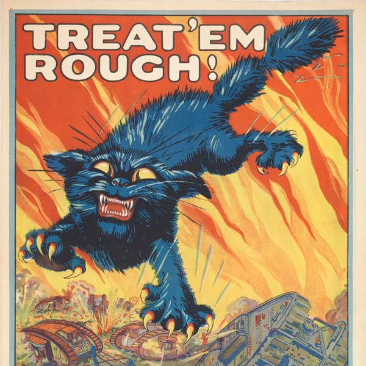


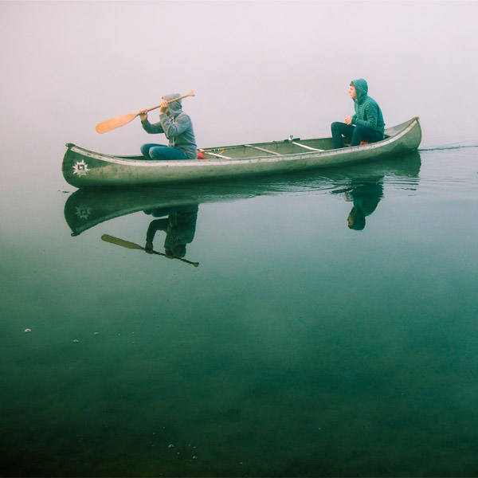

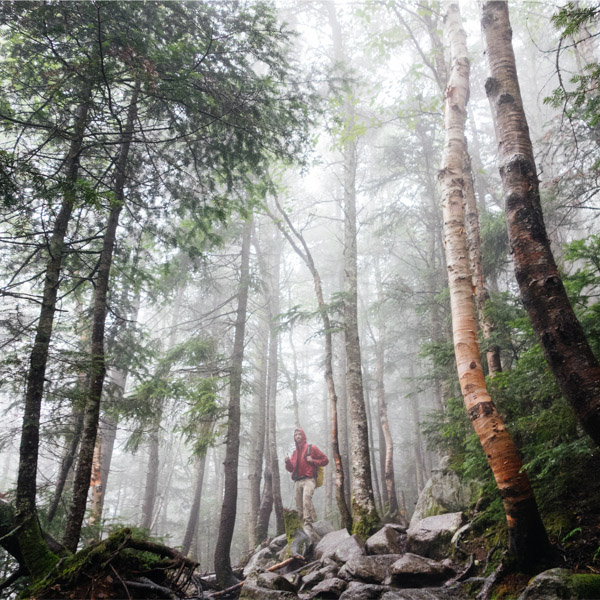
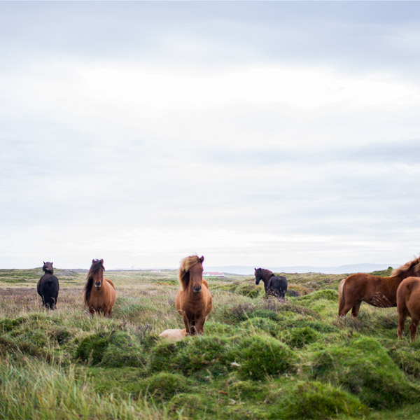
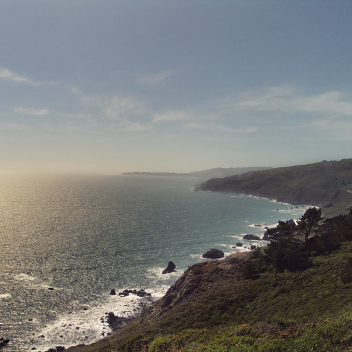
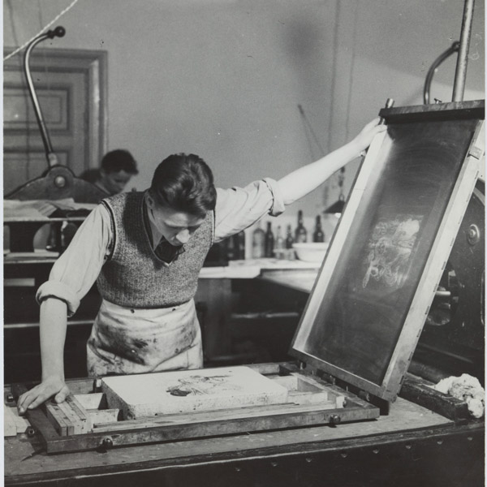
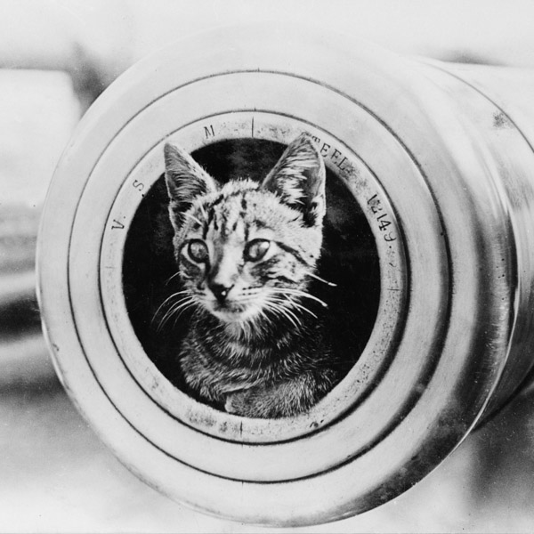

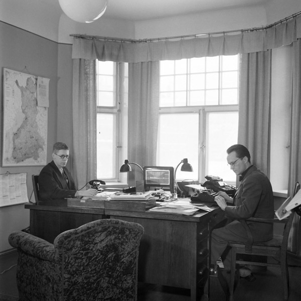
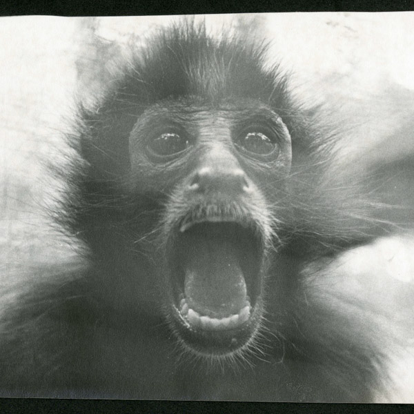
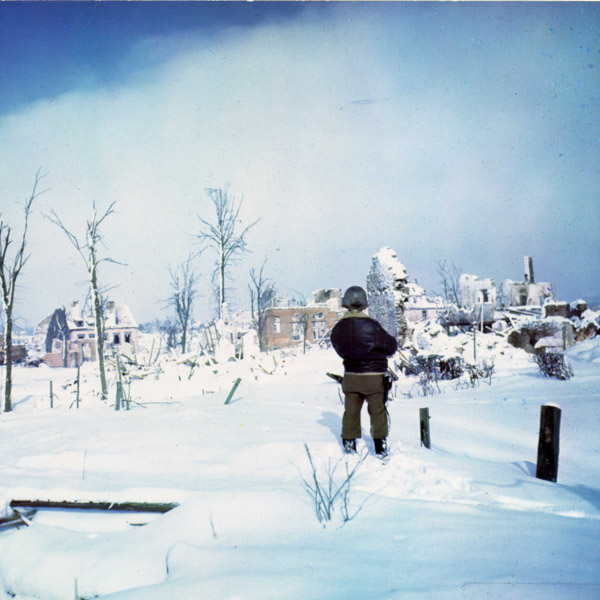
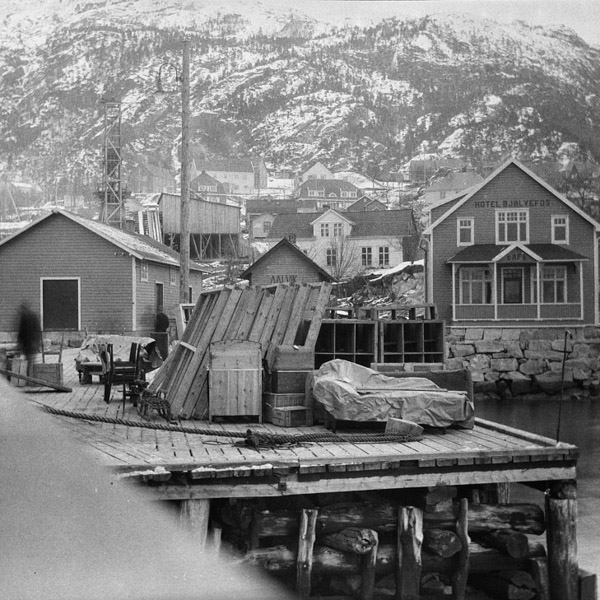
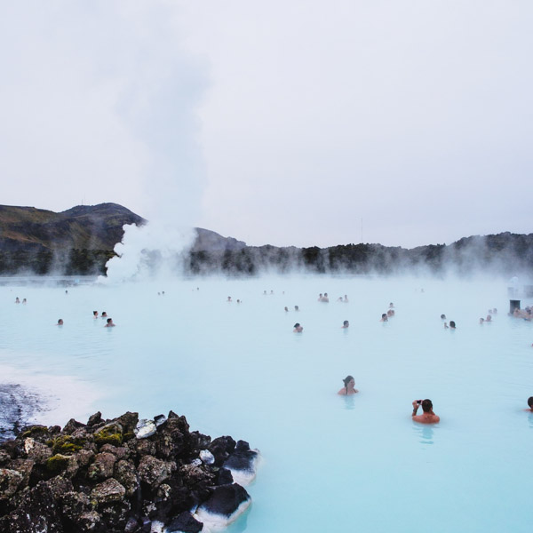
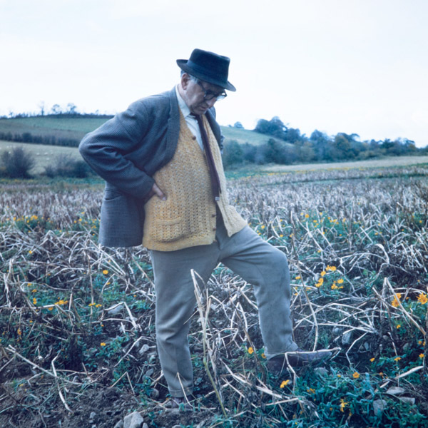
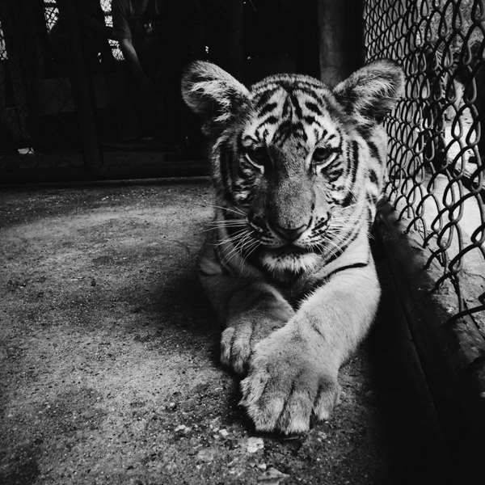
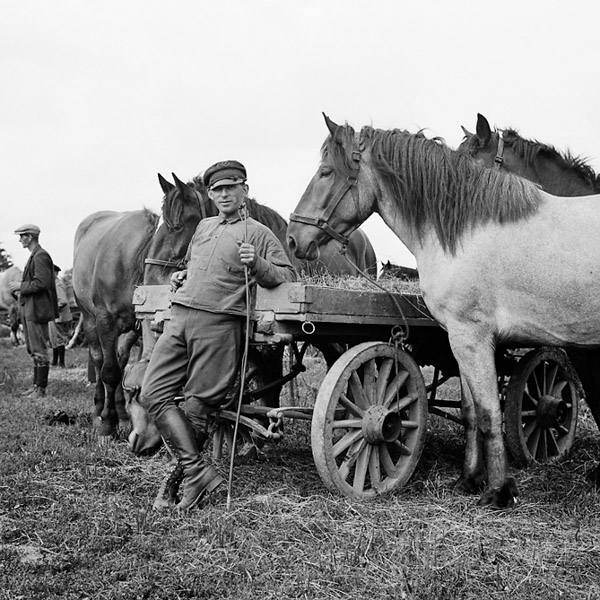
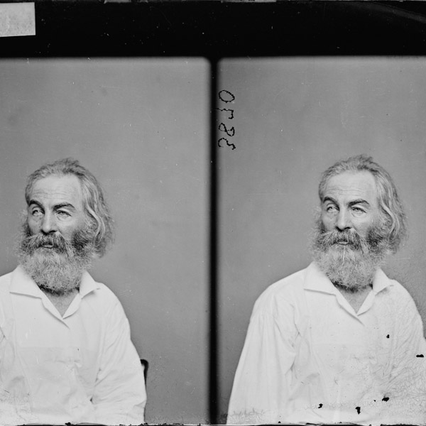